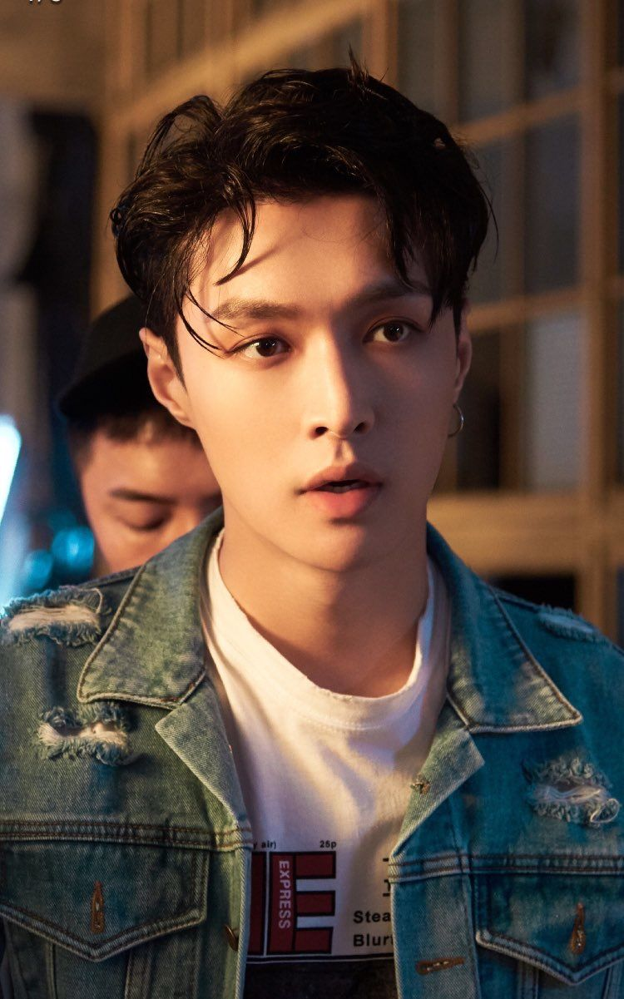

Я вітаю тебе на цій сторінці про популярну корейську
группу ЕХО, залишайся з нами:)

Я вітаю тебе на цій сторінці про популярну корейську
группу ЕХО, залишайся з нами:)
| Псевдонім | Лей |
| Справжнє ім'я | Чжан Ісін |
| Родився | 7 жовтня 1990 року |
| Родом з | Чанша, Хунань, Китай |
| Ріст | 177 см |
| Група крові | A |
Лей (레이) - китайський співак, танцюрист,
актор, продюсер, модель, композитор, автор,
письменник. Він є неактивним учасником
чоловічої групи EXO, а також їх під-групи EXO-M. Також на данний момент, він лише один
китаєць в групі, всі інші корейці.
Лей дебютував в Китаї 28 жовтня 2016 року зі міні-альбомом Lose Control. Він також дебютував в США 19 жовтня 2018 року зі альбомом Namanana. Найбільшим фанатом Ісіна є його мама, вона завжди його підтримує.
«Брати - це ті люди, які пройшли разом через труднощі і допомагали один одному у важкі часи. Ось що означає слово «брати». » - Лей.
